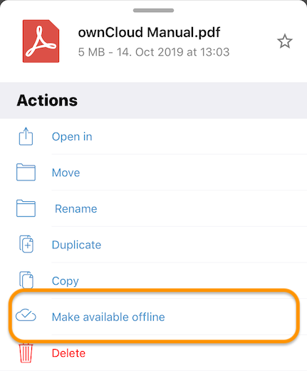
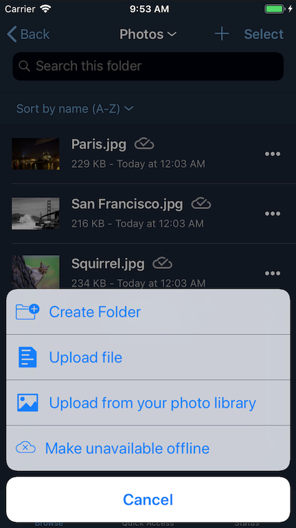
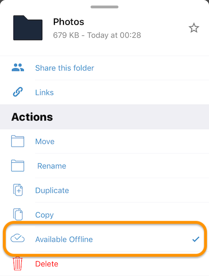
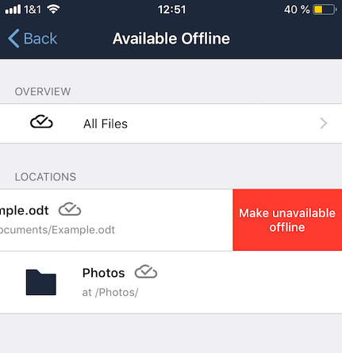
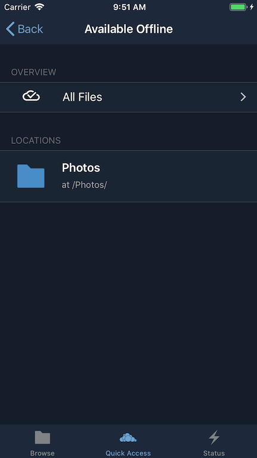
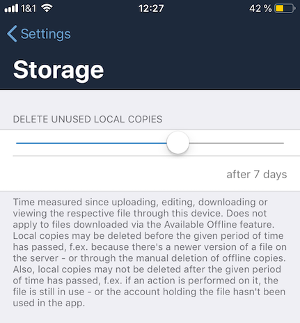

Offline Files and Folders
Introduction
The ownCloud iOS app supports offline storage of files and folders, allowing them to be accessed even when an internet connection is temporarily unavailable.
Making a File or Folder Available Offline
To make a file or folder available offline, click on the More icon and press "Make available offline" from the list of available actions. In the screenshots below, you can see an example of the available actions for files and folders.
| Make file available offline | Make folder available offline |
|---|---|
 |
 |
Files that have been made available offline are identifiable by the available offline icon. You can see an example of the icon image below.
image::available-offline/available-offline-logo.png[,width=350].
Removing a File or Folder from Offline Storage
Any file or folder that has been made available offline can also be removed from offline storage in several ways.
-
By pressing the More icon next to a file or folder and pressing "Available offline" from the list of available actions.

-
By swiping left on an item in the Available Offline Locations list and pressing "Make unavailable offline".

Viewing Offline Files
To view all offline files, from the Quick Access menu, tap Available Offline. If no files have been marked as available offline, then no files will be available.
If one or more files have been marked as available offline, then you have two ways of viewing them.
-
View files by location
-
View a list of all files
View Offline Files by Location
In the screenshot below, you can see that there are one or more files in the Photos directory that have been marked as available offline. If you tap one of the available directories, you will then see all files in that directory that are available offline, similar to how you would view files normally.

Storage
Locally available file copies can be set to be automatically deleted after a specified period, ranging from 1 minute to 30 days, to clean up device space. The default is seven days. This is available under .
| This setting applies to all local files, not just available offline files. |
